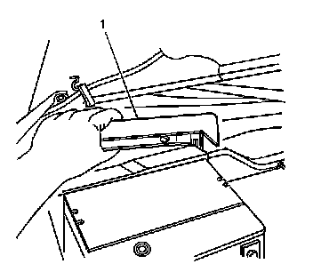
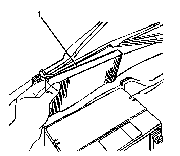

Passenger Compartment Air Filter Housing Replacement Right Hand Drive
Passenger Compartment Air Filter Housing Replacement (Right Hand Drive)
Removal Procedure
1. Remove the air inlet grille access panel. Refer to Air Inlet Grille Panel Replacement (Service and Repair) .

2. With two hands release the tabs on each side of the access cover.
3. Lift up and remove the filter access cover (1).

4. Remove the filter (1) from the filter housing.
Installation Procedure
1. Install the filter (1) in to the filter housing.
2. Install the filter access cover (1).
3. Install the air inlet grille access panel. Refer to Air Inlet Grille Panel Replacement (Service and Repair) .